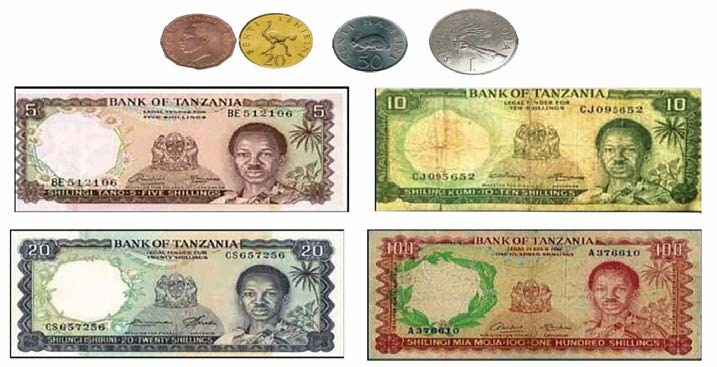
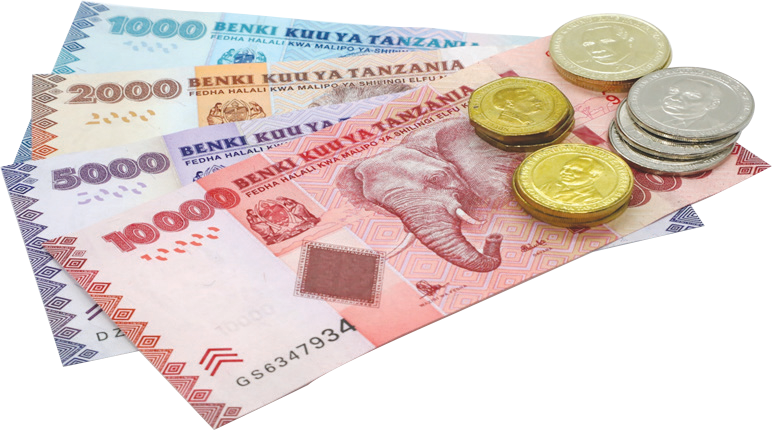

Fedha ya Tanzania
Fedha ni alama muhimu inayolitambulisha Taifa letu. Mara baada ya kupata uhuru, Tanzania ilianza kutumia fedha zake. Fedha hizi zipo katika sarafu na noti. Aidha, fedha hizi zina alama kadhaa kwa ajili ya utambulisho wa historia ya nchi na rasilimali zilizopo. Kielelezo namba 6, kinawasilisha baadhi ya sarafu na noti zilizotumika awali nchini.

Aidha, tangu nchi ipate uhuru kumekuwa na mabadiliko ya sarafu na noti zinazotumika nchini. Hii inatokana na mabadiliko ya uchumi yanayotokea mara kwa mara nchini. Kwa sasa, fedha za Tanzania ni tofauti na zilizopo katika kielelezo namba 6. Kielelezo namba 7, kinawasilisha fedha zinazotumika kwa sasa.

Noti za Tanzania zinazotumika sasa za shilingi elfu moja, elfu mbili, elfu tano na elfu kumi, pamoja na sarafu za shilingi hamsini, mia, mia mbili na mia tano zilizowekwa juu yake.